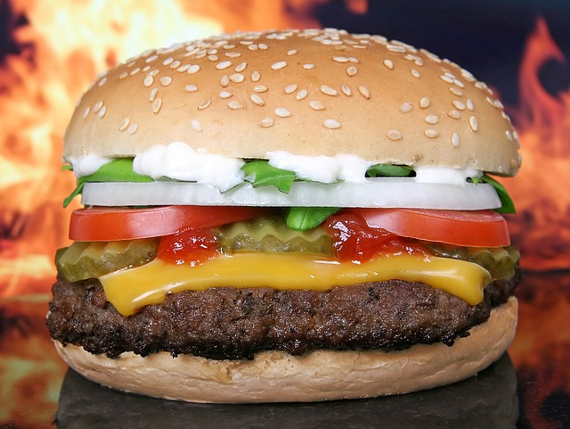

Lasagna

Description
Ingrediants
- buns
- ground beef
- cheese
- ketchup
- mayonaise
Steps
- Make ground beef into patties
- Cook ground beef patties
- Put cheese on the patties
- Melt the cheese
- Put patties on bottom buns
- Put mayonaise and ketchup on top buns
- Put top buns on the patties